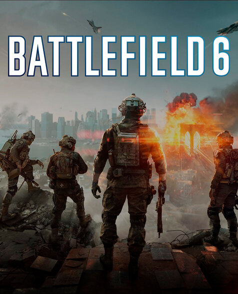

Red Dead Redeptiom 2

Rockstar Games
Playstation 5 - Playstation 5 Pro. Precio: $39.990
Red Dead Redemption es un videojuego de acción-aventura de mundo abierto desarrollado por Rockstar San Diego y publicado por Rockstar Games. Un sucesor del Red Dead Revolver de 2004, es el segundo juego de la serie Red Dead.
Ambientado en un mundo abierto ficticio que abarca el oeste, el sur y el medio oeste de Estados Unidos, el jugador asume el papel de John Marston, un ex forajido que busca a su antigua banda y a su líder, Dutch van der Linde.
El juego se desarrolla en un entorno de mundo abierto, lo que permite a los jugadores explorar libremente y participar en diversas actividades, como cazar, pescar y completar misiones secundarias.
Red Dead Redemption 2 es conocido por su narrativa profunda, personajes memorables y un mundo detallado que refleja la vida en el Viejo Oeste.
El juego ha sido aclamado por su jugabilidad, gráficos y atención al detalle, convirtiéndolo en uno de los mejores videojuegos de la década.
Battlefield 6

Electronic Arts - Battlefield Studios
Playstation 5 - Playstation 5 Pro. Precio: $79.990
Battlefield 6 es un videojuego de disparos en primera persona desarrollado por Battlefield Studios y publicado por Electronic Arts.
Es la decimotercera entrega de la serie Battlefield, tras Battlefield 2042. Recoge la escencia y jugabilidad de sagas anteriores tales como Battlefield 3 y Battlefield 4.
Ambientado en un futuro cercano, el juego se centra en la guerra moderna con un enfoque en la destrucción masiva y el combate a gran escala.
El juego ofrece una experiencia multijugador masiva con mapas expansivos y una variedad de vehículos y armas.
Battlefield 6 promete una jugabilidad dinámica y estratégica, con un enfoque en la cooperación entre jugadores.
Assassin's Creed The Ezio Collection

Ubisoft
Playstation 5 - Playstation 5 Pro. Precio: $39.990
Assassin's Creed The Ezio Collection es una recopilación de videojuegos de acción y aventura desarrollada por Ubisoft. Incluye tres títulos principales de la saga: Assassin's Creed II, Assassin's Creed Brotherhood y Assassin's Creed Revelations.
La colección sigue la historia de Ezio Auditore da Firenze, un joven noble italiano que se convierte en un asesino para vengar la muerte de su familia y luchar contra la opresión de los templarios.
Los juegos ofrecen una experiencia de mundo abierto, permitiendo a los jugadores explorar ciudades históricas como Florencia, Roma y Constantinopla.
La jugabilidad combina sigilo, combate y parkour, permitiendo a los jugadores realizar acrobacias impresionantes y enfrentarse a enemigos en emocionantes batallas.
Assassin's Creed The Ezio Collection ha sido elogiado por su narrativa envolvente, personajes memorables y un mundo detallado que captura la esencia del Renacimiento italiano.
La colección incluye mejoras gráficas y contenido adicional, lo que la convierte en una experiencia completa para los fanáticos de la saga.